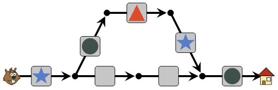
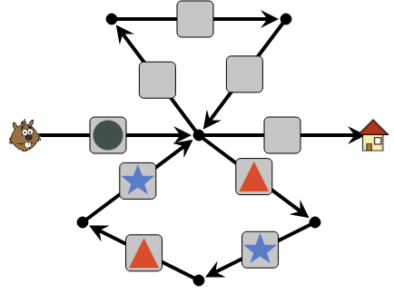
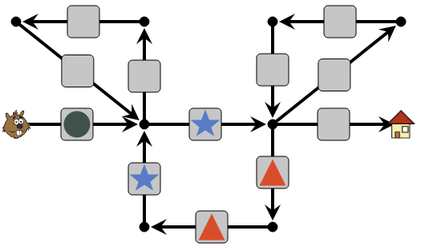

Lösning
Instruktionerna består av fem olika figurer. Bert Bäver måste alltså använda den övre vägen, med fem pilar, och inte den undre med bara 4 pilar.
På den övre vägen placerar man de fem figurerna på var sin pil, i rätt ordning.

I rutorna på den undre vägen kan man lägga vilka figurer som helst, bara man ser till att inte placera en grön cirkel precis efter första vägkorsningen, eftersom det då blir oklart vilken väg Bert Bäver ska välja. Detta är t.ex en lösning:

På denna väg finns två "öglor": en uppåt och en neråt. Om man försöker använda den nedre öglan först, får man problem.

Nästa triangel enligt instruktionerna tvingar Bert Bäver att gå in i samma ögla en andra gång, men efter ett tag stämmer inte instruktionerna längre.
Man måste alltså leda Bert Bäver genom den övre öglan först:

Sedan kan han gå via den undre öglan och göra ytterligare ett varv i den övre innan han når målet.

I instruktionerna finns en delsekvens som upprepas två gånger (stjärna, triangel, triangel, stjärna), sedan följer en ensam stjärna innan en ny upprepning två gånger av sekvensen (cirkel, cirkel, triangel). Vi börjar med att lägga den första sekvensen på den nedre "öglan" av fyra pilar.

Man kan fortsätta genom att lägga nästa upprepade sekvens längs de tre pilarna upptill till höger. Bert Bäver kan nu gå två varv i vardera öglan innan han via en stjärna når målet. Öglan uppe till vänster används inte alls, utan där kan man lägga vilka figurer man vill, bara de inte leder till missförstånd. Här är en exempellösning:

Det är datavetenskap!